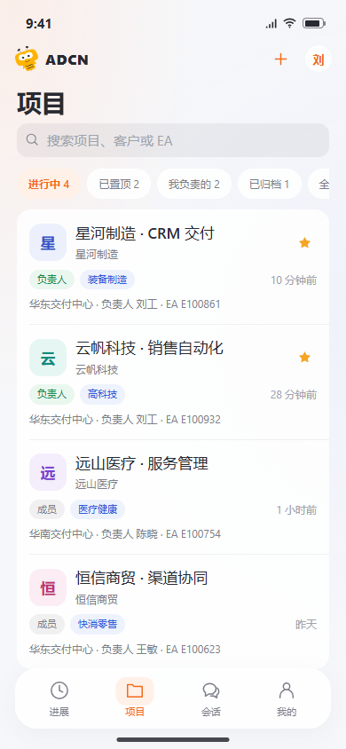
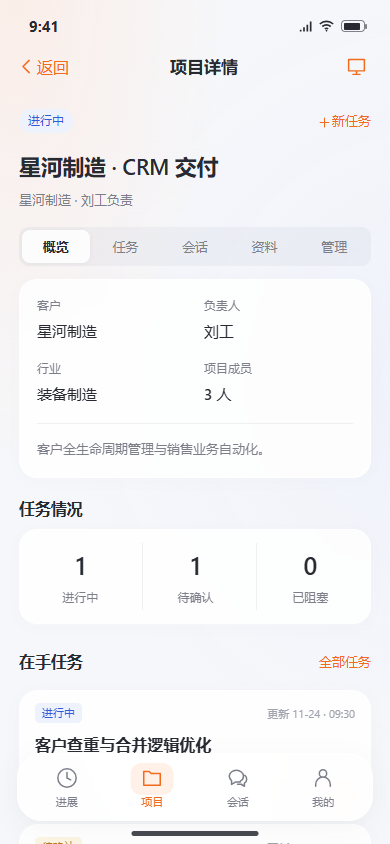
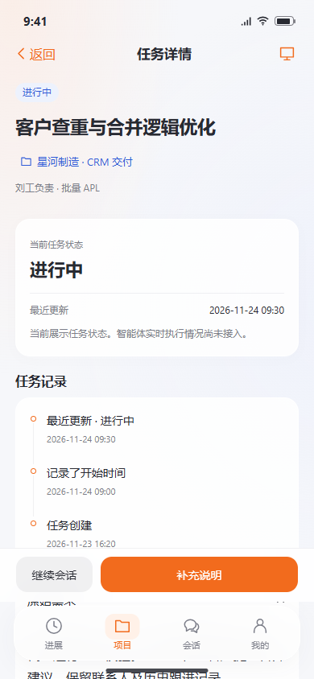
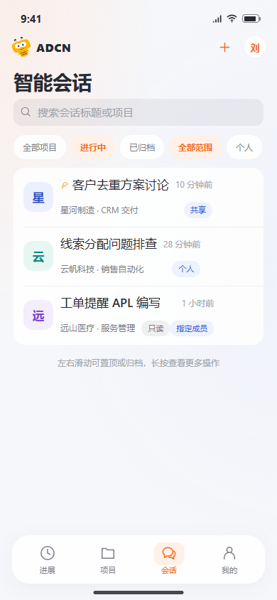
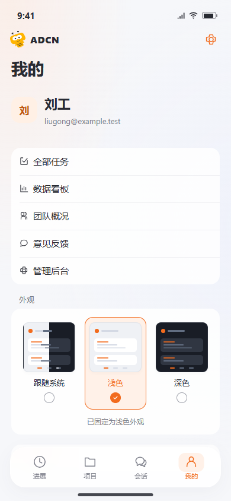
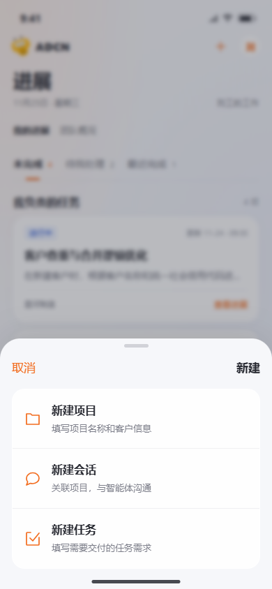

ADCN 移动端原型 · 版本 B
当前移动场景版本，包含最新的任务范围和统一新建入口调整。 以下截图无需运行 JavaScript 即可查看；每张图片可点击打开原图。
统一条件：390 × 844 手机竖屏、浅色模式、同一组合成项目和任务。评审标签默认隐藏。本页只提供界面截图，不执行项目操作。网页复现尚未经过原生 iOS 真机逐像素核对。













可直接发给其他 AI 的评审要求
请独立比较 ADCN 移动端原型的版本 A 与版本 B，不预设哪个版本更好。 主要场景：在手机上查看任务进展、查询项目基本信息、查看和补充需求、进入相关会话。 请分别评估：视觉层次与美观、信息密度、移动端操作效率、导航与术语清晰度、状态信息是否容易误解。 先描述实际观察到的差异，再给分项评价和结论；说明各版本适合什么用户，以及最值得保留和修改的地方。 两版均为合成数据的网页原型，不是真实后台或 iOS 真机应用。不要只按功能数量判断。 本页仅含截图。请据此评价视觉和可见的信息组织，明确注明交互操作尚未验证，不要臆测按钮点击后的行为。